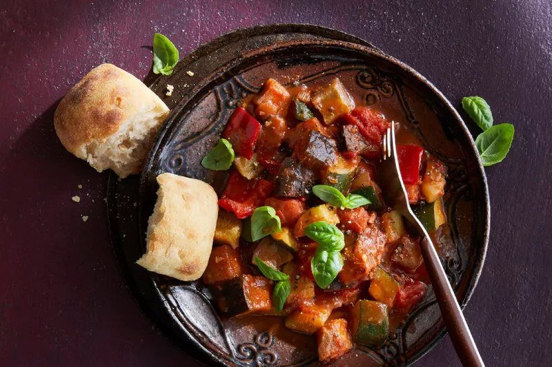

lasagna

Description
Lasagna is a delectable Italian dish that boasts a rich and comforting allure. This culinary masterpiece is crafted by layering thin sheets of pasta with a savory amalgamation of ingredients. The foundation of lasagna lies in its tender pasta sheets, cooked to perfection, providing a delightful texture with each bite. Generously spread between the pasta layers is a luscious symphony of flavors, typically featuring a hearty meat sauce, velvety béchamel sauce, and a medley of cheeses. The meat sauce, often composed of ground beef, onions, garlic, tomatoes, and aromatic herbs, lends a robust and savory essence. The béchamel sauce, made from butter, flour, and milk, adds a creamy and velvety smoothness that envelops the layers. Mozzarella and Parmesan cheeses grace the top, forming a golden and gooey crust when baked. The melding of these components creates a harmonious fusion of flavors, each stratum contributing its own distinct essence. The lasagna is then baked to perfection, allowing the flavors to meld together while the cheese melts and forms a tempting crust. The result is a decadent, multi-layered delight that is both satisfying and comforting, evoking feelings of warmth and homeliness. Whether enjoyed as a family dinner or a celebratory feast, lasagna captivates the senses and leaves an indelible mark on the palate.
ingredients
- Lasagna noodles
-
Meat sauce:
- Ground beef or a combination of ground beef and Italian sausage
- Onion, finely chopped
- Garlic, minced
- Canned crushed tomatoes
- Tomato paste
- Fresh basil leaves, chopped (or dried basil)
- Fresh oregano leaves, chopped (or dried oregano)
- Salt and pepper to taste
-
Béchamel sauce:
- Butter
- All-purpose flour
- Milk
- Salt and nutmeg (optional) for seasoning
-
Cheese mixture:
- Ricotta cheese
- Shredded mozzarella cheese
- Grated Parmesan cheese
- Fresh parsley, chopped
- Additional:
- Olive oil for cooking
- Salt for boiling the pasta water
- Grated mozzarella and Parmesan cheese for topping
- Optional:
- Sautéed vegetables such as mushrooms, spinach, or zucchini for added flavor and nutrients
Steps
- Cook the lasagna noodles according to package instructions, adding salt to the boiling water for flavor. Drain and set aside.
- Prepare the meat sauce:
- In a large skillet, heat olive oil over medium heat. Add chopped onions and minced garlic, and sauté until they become translucent.
- Add the ground beef (or a combination of ground beef and Italian sausage) to the skillet. Cook until browned and fully cooked, breaking it up into crumbles.
- Stir in crushed tomatoes, tomato paste, chopped basil leaves, chopped oregano leaves, salt, and pepper. Simmer the sauce for about 15-20 minutes, allowing the flavors to meld together. Adjust seasonings if needed.
- Prepare the béchamel sauce:
- In a saucepan, melt butter over medium heat. Gradually whisk in all-purpose flour until well combined.
- Slowly pour in milk while continuously whisking to avoid lumps. Keep whisking until the sauce thickens and comes to a gentle boil.
- Season with salt and a pinch of nutmeg (optional) for added flavor. Remove from heat and set aside.
- Preheat the oven to the recommended temperature according to the lasagna noodle package instructions.
- Assemble the lasagna:
- Spread a thin layer of meat sauce on the bottom of a baking dish.
- Add a layer of cooked lasagna noodles on top of the sauce.
- Spread a layer of the meat sauce over the noodles, followed by a layer of béchamel sauce, and then a layer of the cheese mixture (ricotta, mozzarella, Parmesan, and parsley).
- Repeat the layers until all the ingredients are used, ending with a layer of meat sauce and cheese mixture on top.
- Sprinkle grated mozzarella and Parmesan cheese on the top layer for a cheesy crust.
- Bake the lasagna in the preheated oven for the recommended time, or until the cheese is melted and bubbly, and the lasagna is heated through.
- Remove from the oven and let it cool for a few minutes before serving. This allows the lasagna to set and makes it easier to slice and serve.
- Enjoy the delicious homemade lasagna with family and friends!